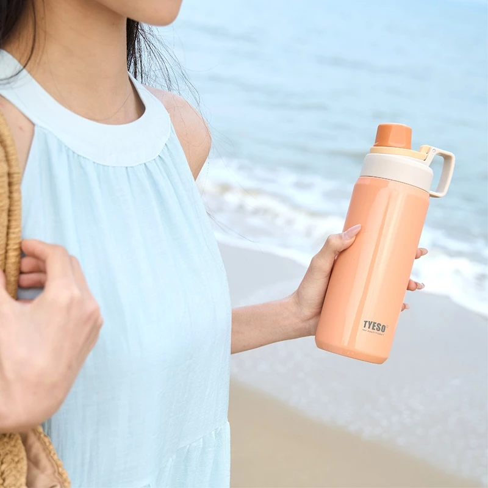

Founded in 2023, TYESO emerged as a modern tumbler brand focused on combining stylish design, practical functionality, and everyday convenience. From the beginning, TYESO has aimed to create drinkware that fits seamlessly into modern lifestyles-whether for work, travel, fitness, or daily activities.
